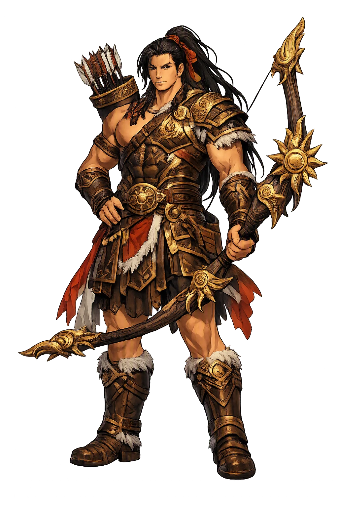
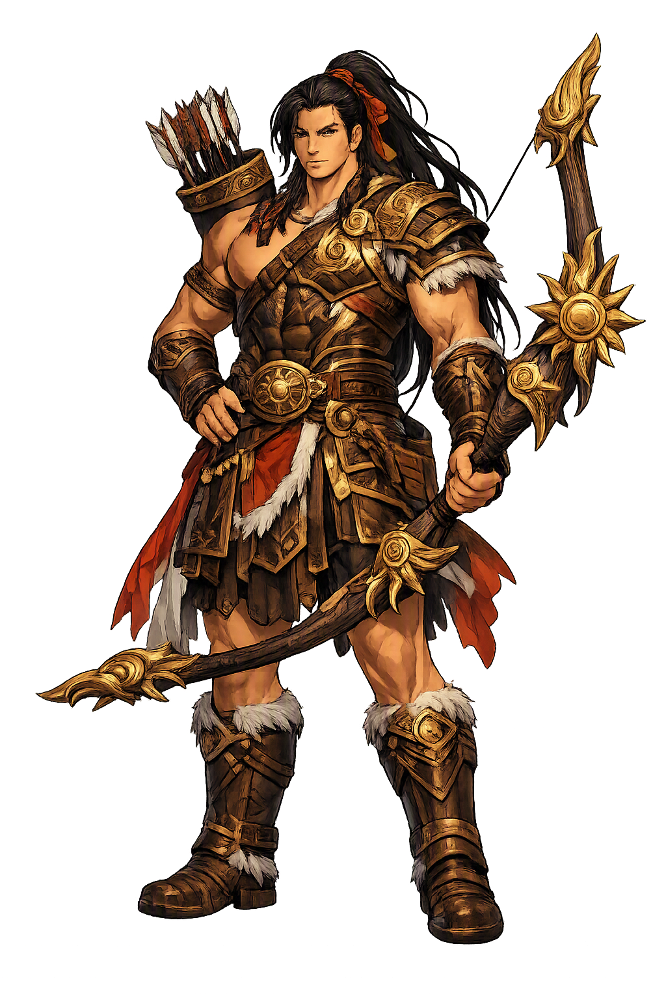

The Authentic Orthography
Archery, Suns, Heroism · The divine archer who shot down nine suns

Unicode restoration and ASCII comparison
后羿
The name in its original Chinese form. Hòuyì (后羿) is attested in the source tradition — “The divine archer who shot down nine suns”. Its original diacritics and script distinctions carry the full phonetic and orthographic weight of the source tradition.
houyi
Reduced to plain houyi, the name loses everything that made it specific: original diacritics and script distinctions. What remains is an ASCII string that machines can parse but that no longer speaks with its original voice.
Hòuyì
The Unicode restoration recovers what ASCII flattened. Hòuyì restores original diacritics and script distinctions, returning the name to its original written dignity. The domain encodes to Punycode, but the browser displays the truth.
Hòuyì.com → xn--huy-pma1a.com
The non-ASCII characters in Hòuyì are encoded while the ASCII remains visible. To the DNS, it is Punycode. To humanity, it is Hòuyì.
How Hòuyì is preserved in writing
A bespoke provenance study for Hòuyì is being prepared by the PUNICODEX scholarly team.
Contribute scholarly provenance →Owned, ideal, and ASCII forms of Hòuyì
Hòuyì
Restores 后羿. The live temple domain — hòuyì.com.
houyi
Flattens 后羿. The plain ASCII fallback — what DNS and legacy systems see.
How Hòuyì was spoken
Precision, Deliverance, the Spared Light
Hòuyì is the divine archer of Chinese myth, the hero who stood between heaven's excess and the earth's survival. In the age of the sage-emperor Yáo, the ten suns — three-legged crows, sons of Dìjùn and the sun-mother Xīhé — rose all at once instead of taking their appointed turns. Rivers dried, crops failed, and monsters crawled out of the scorched wilderness. Hòuyì drew his great bow and shot nine suns from the sky, sparing one so that day and night, sowing and harvest, could keep their order.
His story is a hinge between worlds: the same bow that cleared the earth of monsters also won him the elixir of immortality from Xīwángmǔ, the Queen Mother of the West — the elixir his wife Chángé would ultimately take, fleeing to the moon. The archer who saved the earth lost heaven, and Chinese myth has never stopped telling both halves of that story.
The great bow and its arrows are heaven's instruments of correction — not conquest, but the precise removal of what has grown excessive.
Ten three-legged crow-suns, sons of Dìjùn and Xīhé, once took turns crossing the sky; their simultaneous rising nearly ended the world.
With the suns subdued, Yi cleared the earth of the beasts the drought had unleashed: Yàyǔ, Záochǐ, Jiǔyīng, Dàfēng, the serpent Xiūshé, and the boar Fēngxī.
Xīwángmǔ's gift of immortality, earned by the archer's service — and lost when Chángé drank it and rose to the cold palace of the moon.
Stories of Hòuyì
The cycle of Hòuyì is the great Chinese myth of cosmic correction: a heaven that gives too much, an earth that suffers for it, and one archer whose arrows restore the mean. Its episodes run from the scorched world of the ten suns to the cold moon where his wife still dwells.
In the reign of Emperor Yáo, the ten suns — three-legged crows roosting in the Fusang tree, sons of Dìjùn and the sun-mother Xīhé — abandoned their orderly rotation and rose together. The earth burned: rivers dried, crops withered, and the people starved. Yáo called on Hòuyì, the divine archer, who climbed to the heights and loosed his arrows. One by one nine suns fell from the sky in their crow forms, and the tenth — spared — resumed its solitary, lawful journey. The myth is told across the Shān Hǎi Jīng tradition and given its fullest early form in the Huáinánzǐ.
The drought had loosed terrors on the world, and the Huáinánzǐ lists the archer's second labor: he slew Yàyǔ, the man-eating beast of the wilds; Záochǐ in the waters of Chouhua; Jiǔyīng, the nine-headed monster of the Xiong river; the great wind-bird Dàfēng in the marshes of Qingqiu; the giant serpent Xiūshé at Lake Dongting; and the monstrous boar Fēngxī in the mulberry groves of Sanglin. Only when the last beast fell could the people plow in peace.
For his service, Xīwángmǔ, Queen Mother of the West, granted Hòuyì the elixir of immortality. He brought it home — and there the story turns. His wife Chángé took the elixir and rose to the moon, leaving the archer mortal and alone on the earth he had saved. Early versions are spare about her motive; later tellers made her a thief, a fugitive, or a wife protecting the elixir from the archer's treacherous disciple. However it is told, this is the hinge of the cycle: the hero of the suns becomes the earthbound husband of the moon.
The darker strand of the cycle is preserved already in the Mèngzǐ, which records that Féngméng (逢蒙) studied archery under Yì and, once he had learned all that Yì could teach, killed his master — in the fuller later accounts, clubbing him to death with a peachwood staff. The student murders the teacher the moment the teaching is complete. The Mèngzǐ itself weighs how far Yì shared the blame for trusting such a man, and Chinese moralists have debated the lesson ever since: mastery without loyalty is the surest way to unmake a hero.
Hòuyì teaches the hardest lesson of heroism: that power must know when to stop. Nine arrows were justice; a tenth would have been annihilation. The archer's greatness lies not in what he destroyed but in the one sun he spared — the judgment that the world needs light, only not too much of it. Chinese thought found in this a parable of the mean: excess, even of a good thing, is the true monster, and correction, not eradication, is the hero's work.
Enter Extended Lore